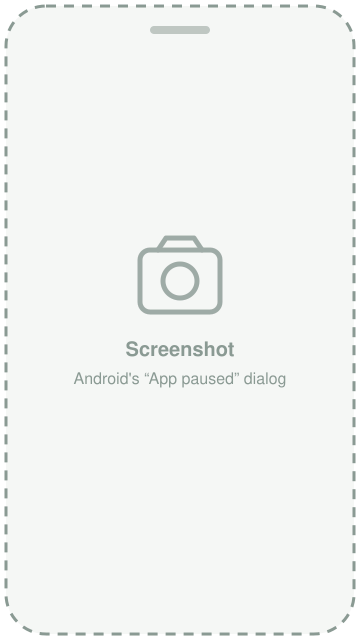
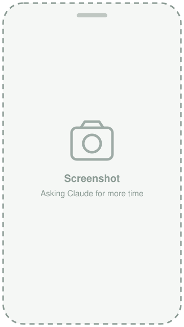
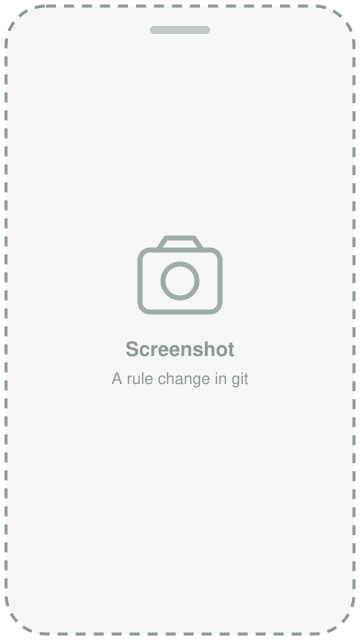

kidctl
Parental control for your children's Android phones, without handing their days to a cloud service. The rules are a short YAML file in a git repository you own. Edit it and push, or just ask Claude, and the phone follows within a couple of minutes.



What it does
- Daily time budgets per group of apps and per weekday, counted across all of a child's phones.
- Downtime for bedtime or school hours, optionally with the screen kept locked (emergency calls still work).
- Always-allowed apps (phone, maps, school apps) and blocked ones.
- Approval of new apps: anything the child installs stays paused until you list it.
- Temporary exceptions that expire on their own: extra time tonight, a lock for homework, an unlock for a party.
- A heads-up for the child: a notification at 50, 80 and 95 % of a budget and a few minutes before downtime, in French or English, each at most once a day.
- Ask Claude to change the rules: approve or block an app, extra time, lock or unlock, a limit, the downtime, any device setting. Every change is a validated git commit in your repo.
- The phone itself: no factory reset, no safe mode, no changing the clock, no new users or accounts; hidden apps, camera and screenshots, allowed or denied Wi-Fi networks, a locked default browser and launcher, no Force stop or Clear storage for the apps you list.
- Filtering that follows the phone: always-on VPN and enforced Private DNS, so your DNS filter applies on mobile data too.
- Managed app configurations: the settings an app lets its administrator fix, for example a VPN app's own on/off switch kept on.
- Updates itself over the air from your server, with USB debugging off; proven on a real phone with Play Protect on.
- Tells you what didn't work: anything Android refuses is reported as an event, and you can see whether each phone has the rules your server serves now. Plus usage per app per day.
How it works
you ── git push ──────────► your git repo
│ ▲
pulled by Argo CD, │ │ Claude's changes:
Flux or a timer ▼ │ validated, committed, pushed
Claude ── MCP, OAuth ─────► kidctl server validates and serves the rules,
▲ stores usage and events
│ every minute: usage up, rules down
▼
phone agent device owner, enforces offline- The server (Rust, one binary or a container) watches a directory checked out from your repo. A broken edit is rejected and the last valid rules stay in force.
- The agent is an Android app set up as device owner, the mode Android reserves for managed phones. It has no screen and no dependencies. It measures foreground time per app, evaluates the rules locally every 30 seconds and pauses apps with Android's own mechanism. No network, no problem: the rules keep applying.
- The repo is your control panel and your audit log, whether you edit it yourself or Claude does. Use any git host, private if you like.
The rules, in full
child: alex
timezone: Europe/Paris
downtime:
- {start: "21:00", end: "07:00"}
- {start: "22:30", end: "07:00", days: [fri, sat], lock_screen: true}
always_allowed: [com.google.android.dialer, com.google.android.apps.maps]
blocked: [com.zhiliaoapp.musically]
approval: true # new apps wait for you
approved: [com.duolingo]
limits:
- name: games
apps: [com.mojang.minecraftpe, com.supercell.brawlstars]
daily: {weekdays: 45m, weekend: 2h}
- name: video
apps: [com.google.android.youtube]
daily: {wed: 1h, sat: 1h30m, sun: 1h30m, default: 30m}
- name: everything
apps: ["*"]
daily: {weekdays: 2h, weekend: 3h}
notify: {quota_at: [50, 80, 95], before_downtime: 5m, locale: en}
device:
restrictions: [no_factory_reset, no_safe_boot, no_config_date_time, no_add_user]
private_dns: {mode: host, host: dns.example.org}
user_control_disabled: [com.tailscale.ipn] # no Force stop / Clear storage
app_config:
com.tailscale.ipn: {ForceEnabled: true} # its own switch stays onAnd for tonight only, in alex.overrides.yaml:
overrides:
- {extra: 30m, limit: games, until: "2026-11-07T21:00", note: "homework done"}See the rule reference for everything else.
Ask Claude
The server speaks the Model Context Protocol. Add it as a custom connector in claude.ai or in Claude Code, sign in with your owner password (OAuth), and ask in plain words:
- “How long was Alex on YouTube today, and how much is left?”
- “Alex just installed an app. What is it? Approve it in the games limit.”
- “Give Alex 30 more minutes of games tonight.”
- “Lock Alex's phone until 18:30 for homework, screen included.”
- “Bedtime at 21:30 on school nights from now on. Show me the diff first.”
- “Does Alex's phone have the new rules yet? Did anything fail?”
Claude reads live status, usage, installed apps, the rules and the phone's events. When it changes something, the change goes through git like yours: the server edits only the child's file, keeps your comments and layout, validates the whole directory, commits with a note of who asked, and pushes. The phones apply it two to three minutes later. A dry run shows the diff without committing; a whole-file rewrite is refused if the file changed since Claude read it, so nobody's edit is lost. To undo, revert the commit.
Supported
| Phones | Android 13 or newer, set up from a factory reset (developed on Android 17; runs on a Pixel 8) |
|---|---|
| Server | Any Linux machine or Kubernetes cluster that the phone can reach over HTTPS; container image built from the repo |
| Rules | A git repository on any host; for Claude's changes, one the server can push to with a deploy key |
| Claude | claude.ai and Claude Code, over MCP with OAuth |
| Not supported | iPhone and iPad (why) |